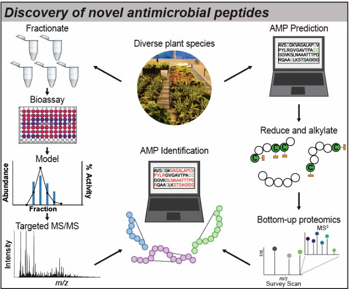
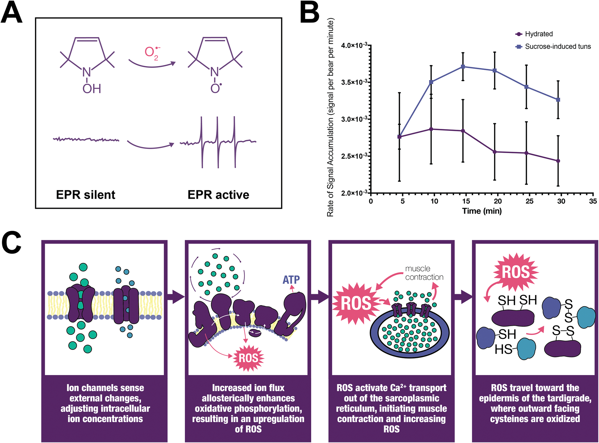

Bioactive Peptides
Recent advances in technology have highlighted the diverse and essential roles of peptides across different biological systems. Peptides function in human physiological regulation, microbial competition, and host-pathogen communication. Unicellular organisms produce antimicrobial peptides (AMPs) to suppress competitors, while multicellular organisms use peptides as part of innate immunity. Peptides also mediate interactions between hosts and their microbiomes, influencing health and disease. Despite this, many peptide functions remain unknown. This research aims to uncover novel bioactive peptides and understand their roles in defense, health, and microbe-host interactions.
Proteomics Signaling Networks
Our laboratory has developed quantitative proteomics approaches for systems biology analyses in green algae, plant and microbial systems. Due to their critical roles in regulation of cellular signaling, we have focused on approaches to explore proteome-wide post-translational modifications such as reversible oxidation, phosphorylation, and proteolysis.
